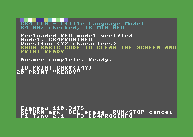
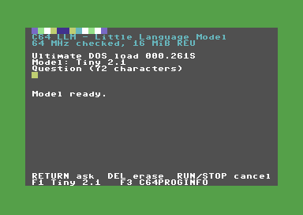
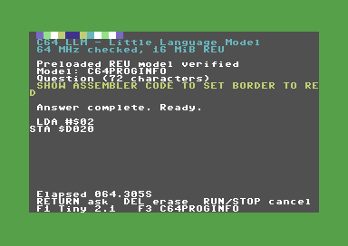

C64 LLM - Little Language Model
Version 0.7 runs two selectable character models in native 6502/6510 assembly on a 64 MHz C64 Ultimate with a 16 MB REU. Tiny 2.1 answers general short questions. C64PROGINFO focuses on Commodore 64 hardware, BASIC V2, and 6502 assembly.
Download and setup · Technical details · Build from source · Online guide · GitHub release
Use the console
Unzip the v0.7 package and copy PROBE.PRG, MODEL.BIN, and C64PROGINFO.BIN to /USB1/TINY64-MODELS. Enable the 16 MB REU and Command Interface, set Turbo Control to C64U Turbo Registers, and run PROBE.PRG from the Ultimate menu. It starts with Tiny 2.1.
| Key | Model | Context |
|---|---|---|
| F1 | Tiny 2.1 | 128 positions |
| F3 | C64PROGINFO | 224 positions |
Switch while the console is ready. Check the Model: line after Model ready. appears. The program loads the selected model if needed and reuses a verified copy already in its REU slot. Type a question and press RETURN. DEL edits the prompt. Hold RUN/STOP to cancel during generation. The console keeps the question on screen with its answer and starts a fresh question on your next typed character. Wrapped questions keep their color on both rows.
Video
Watch the original Tiny 2.1 demo on YouTube
Try C64PROGINFO
what cpu does the c64 use→ A MOS 6510.what is the resolution of c64 hires bitmap→ 320 by 200 pixels.show basic code to clear the screen and print ready10 PRINT CHR$(147) 20 PRINT "READY"show assembler code to set border to redLDA #$02 STA $D020

C64PROGINFO was trained on 3,507 C64 facts and code examples, expanded into alternate question wordings. It covers the 6510, VIC-II, SID, CIA, memory and registers, KERNAL calls, BASIC V2 and assembly. It works best with familiar phrasing and can give incorrect answers or code. Training data, tests and results
Try Tiny 2.1
| Type this question | Answer | v0.7 measured time at 64 MHz |
|---|---|---|
what is 7 times 8 |
7 times 8 is 56. | 32.442 s |
what is the capital of peru |
Lima. | 30.678 s |
The engine generates one character at a time. On the same Ultimate, v0.7 cut the combined time for these two prompts by 10.8% from v0.6. Benchmark methodology
The upstream model was trained on roughly 3,500 facts with multiple wordings. The original physical demo covers vocabulary, grammar, translation, geography, science, literature, computing and math. Upstream Tiny 2.1 training kit
Questions from the original demo
| Question as entered | Answer from Tiny 2.1 |
|---|---|
give me a synonym for happy |
Glad. |
what is the plural of mouse |
Mice. |
translate dog to spanish |
Dog in Spanish is perro. |
what is the capital of japan |
The capital is Tokyo. |
what planet is known as the red planet |
It is Mars. |
what do bees make |
Honey. |
who wrote hamlet |
William Shakespeare. |
what is the chemical symbol for gold |
It is Au. |
how many bits in a byte |
A byte has eight bits. |
what is the square root of 81 |
9. |
Screenshots


Credits and license
The original Tiny 2.1 checkpoint and Pentium/486 DOS implementation are by WollyMonjac/Tiny-2.1. The C64 port, documentation, and C64PROGINFO are under the MIT license. Peddle keeps its own MIT notice.
C64PROGINFO's training tools adapt the PyTorch decoder and training loop from jaydarkseed757’s c64-dungeon. The c64-dungeon notice and the upstream Tiny 2.1 notice are included in the ZIP.